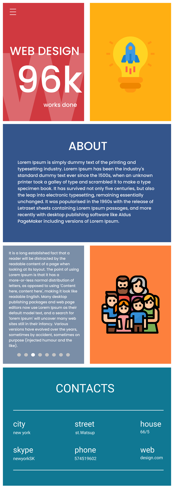

Bohdan Hutsaliuk
Wrocław, tel. 574519602
bogdan83g@gmail.com
linkedin
github
DEVELOPER
KWALIFIKACJA:
- Tworzę strony internetowe (HTML5, CSS3 (media queries), JavaScript, PHP, SQL)
- Tworzę grafikę komputerową
- Pracuję z bazami danych
- Lubię programować
- Jestem komunikatywny i umiem pracować w zespole
- Lubię się stale uczyć
UMIEJĘTNOŚCI TECHNICZNE:
Jęnzyki programowania: HTML5*****, CSS3*****, JavaScript***, PHP***, SQL****
Frameworki i Programy: Bootstrap, Jquery, CMS WordPress, GitHub, MS Offise
Grafika komputerowa: Adobe Photoshop, Adobe Illustrator, CorelDRAW, Figma, Blender, Davinci, GIMP, Inkscape
Bazy danych: XAMPP, MySQL, MariaDB
PORTFOLIO:
Nacisnij:

DOSWIADCZENIE ZAWODOWE:
10/2019 – dzisiaj Freelance – Web Developer
- Psd to HTML CSS
- HTML5: tworzę strony internetowe
- CSS3: robię responsywnę stronę dla telefonów, tabletów oraz laptopów
(media queries)
- SQL: robię bazy danych oraz administruję bazami (zapytania)
- PHP: podłączam do bazy danych, pobieram dane, wysyłam zapytanie, zwracam odpowiedź bazy danych, robię cookie
- Java Script: robię skrypty pobierania danych i zwrócenia wartości
- Pracuję z grafiką (Photoshop, Figma, Gimp, Inkscape)
- Testowałem aplikacji webowe i gry
01/2017 – dzisiaj Solid, Wrocław, Polska – Monitoring
- kontrolowałem PPOŻ, SSWIN
- liAdministrowałem monitoring kamer ochrony
- Naprawiałem komputery
- Zażądałem programami ochrony
10/2014 – 11/2015 Orion, Korosteń, Ukraina – Specjalista IT
- Instalowałem i serwisowałem komputery, drukarki, skanery
- Usuwałem problemy sprzętu oraz oprogramowania
- Pomagałem użytkownikom w sprawach informatycznych
- Montowałem sieci LAN
- Administrowałem bazy MySQL
- Kontrolowałem Windows serwer
08/2007 – 09/2015 Czepło, Korosteń, Ukraina – Prawnik
- Byłem prawnikiem w sprawach zadłużeń
- Chodziłem do sądu
WYKSZTAŁCENIE:
2019 Centrum nauki i biznesu „Żak” we Wrocławiu – Technik Informatyk
Kwalifikacja E.12: Montaż i eksploatacja komputerów osobistych oraz urządzeń peryferyjnych
Kwalifikacja E.13: Projektowanie lokalnych sieci komputerowych i administrowanie sieciami
Kwalifikacja E.14: Tworzenie aplikacji internetowych i baz danych oraz administrowanie bazami
2018 Kursy Sololearn – HTML, CSS, JavaScript, SQL, PHP
2017 IT szkoła we Lwowie – Tester oprogramowania
2006 Charków Uniwersytet – prawnik
2003 Żytomyr Kolegium - prawnik
Prawo jazdy kat. B